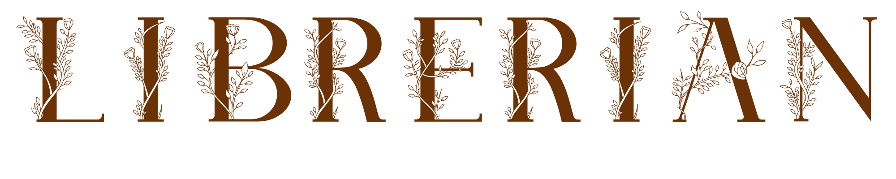

|  |
|
Latest version: None Source code: GitHub Archives |

Librerian is program made to manage database of various art collections, similarly to services like IMDB,
GoodReads, Last.fm and others. The incentive came out of me being frustrated to have those decentralised and dependent
on something external - websites like this can come and go in any time, and with them all books/movies/others saved
there.
Librerian idea came as natural solution - a way to save all those collections in one place, with easy export of
files, possibly also integration with services mentioned, and expandability via modules (to add more categories if
needed).
Quite quickly after that, also the idea to improve those services, with rewatch count/dates, covers searchable
from web, and other features I missed in original.
Progress Status
Right now, Librerian is on hold, waiting for me to finish more projects before I come back to it again.
Its current implementation is close to the workable prototype, but its codebase is a mess - I imagine coming back
to the project, I would rewrite it entirely, maybe in different language and framework.
Team
- Developers
- Toma400 : lead
- Contributors
- Sajevius : logo
- Translators
- Hungarian : CrashGyuluka
- Spanish : Ginger
- Arabic : Hamza
- Czech : skeletontonguedworld